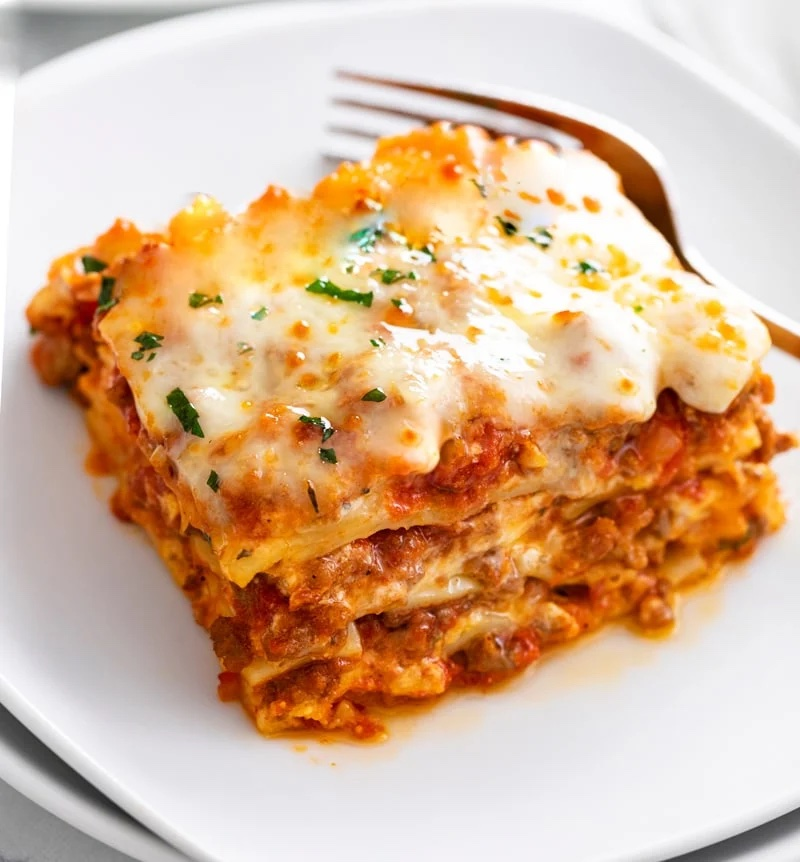

Lasagna Recipe

Description
Lasagna, an iconic Italian dish, layers pasta sheets,
rich meat sauce, creamy béchamel, and generous sprinklings
of flavorful cheese to create the ultimate comfort food.
Enjoy with a side salad or crusty bread for a full Italian feast.
Ingredients
- Pasta sheets (lasagna noodles)
- Ground beef or a mix of beef and pork
- Onions, finely chopped
- Garlic cloves, minced
- Can of crushed tomatoes
- Olive oil
- Fresh basil and oregano (or dried herbs)
- Salt and pepper
- Grated mozzarella cheese
- Grated Parmesan cheese
- For béchamel: butter, flour, milk, and a pinch of nutmeg
- Ricotta cheese (optional for some recipes)
Steps
- Preheat your oven to 375°F (190°C).
- In a large skillet or pan, heat the olive oil and sauté onions and garlic until translucent.
- Add the ground meat to the skillet and cook until browned.
- Stir in the crushed tomatoes, basil, oregano, salt, and pepper. Simmer for about 20 minutes.
- In a separate saucepan, melt butter for the béchamel. Once melted, stir in the flour and cook for a couple of minutes. Gradually add milk while stirring to prevent lumps. Season with a pinch of nutmeg, salt, and pepper. Cook until the sauce thickens.
- In a baking dish, spread a layer of meat sauce at the bottom.
- Place a layer of lasagna noodles over the meat sauce.
- Spread a layer of béchamel sauce over the noodles, and if you're using ricotta, add a layer of it here.
- Sprinkle a generous amount of mozzarella and Parmesan cheese.
- Repeat layers (meat sauce, noodles, béchamel, cheeses) until all ingredients are used, finishing with a layer of cheese on top.
- Cover the baking dish with aluminum foil and bake in the preheated oven for 25 minutes.
- Remove the foil and bake for an additional 10-15 minutes, or until the cheese is golden brown and bubbly.
- Allow the lasagna to cool for about 15 minutes before slicing and serving. Enjoy!